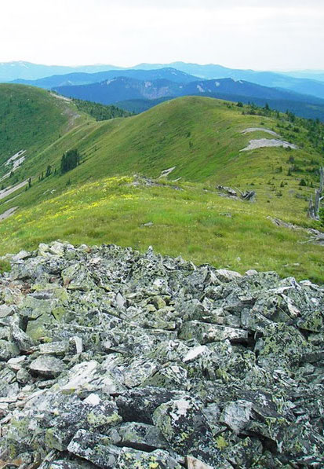

Cycle the Continental Divide
Join our annual event of cycling the continental divide! The Great Divide Mountain Bike Route (GDMBR) is Adventure Cycling's premier off-pavement cycling route, crisscrossing the Continental Divide north to south. This route is defined by the word "remote." Its remoteness equates with spectacular terrain and scenery. The entire route is basically dirt-road and mountain-pass riding every day. In total, it has over 200,000 feet of elevation gain. Roughly 80% of it is composed of county, Forest Service (USFS), and Bureau of Land Management (BLM) dirt and gravel roads. The remainder is made up of four-wheel-drive tracks and singletrack trails (10%), and paved roads (10%).
When?
The event is always on Good Friday, which falls this year on 30 March. The event begins at 10am.
Where?
The route begins at Roosville, Montana and finishes at Polaris, Montana.
How much?
Participation - including rider bag with t-shirt, water bottle and more - costs $75.
What is required?
You must be an able-bodied human being, and you must bring your own bike and helmet.